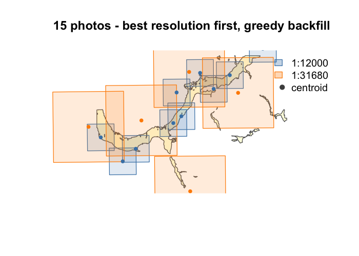

Footprints from Legacy aerial photographY
Select the minimum set of historic airphotos needed to cover your study area.
Why
Historic airphotos are essential for documenting landscape change, but ordering them is tedious — you’re choosing from thousands of overlapping frames across multiple scales and decades. Photo centroids are available from the BC Data Catalogue but knowing which frames actually cover your area of interest requires estimating ground footprints from scale and film format.
fly estimates those footprints, filters by actual ground coverage (not just centroids), and picks the smallest set that meets your target. Best-resolution photos first, coarser scales fill the gaps.

Upper Bulkley River floodplain near Houston, BC — 1968 photos at 1:12,000 (blue) and 1:31,680 (orange).
Installation
pak::pak("NewGraphEnvironment/fly")Example
library(fly)
library(sf)
# Estimate footprint rectangles from centroids
footprints <- fly_footprint(centroids)
# Filter photos whose footprint overlaps the AOI (not just centroids)
filtered <- fly_filter(centroids, aoi, method = "footprint")
# Fewest photos to reach 95% coverage
selected <- fly_select(filtered, aoi, mode = "minimal", target_coverage = 0.95)
# Ensure every disconnected AOI polygon gets at least one photo
selected <- fly_select(filtered, aoi, mode = "minimal",
target_coverage = 0.95, component_ensure = TRUE)
# Or grab every photo touching the AOI
all_photos <- fly_select(filtered, aoi, mode = "all")Related packages
flooded delineates floodplain extents from DEMs and stream networks — use it to generate the AOI polygons that fly selects photos for.
Documentation
Full walkthrough with priority selection at the airphoto selection vignette.